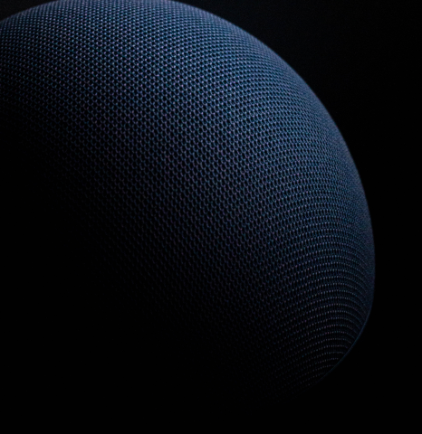
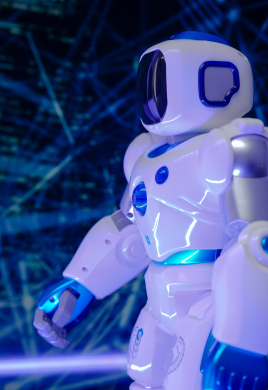

KAWASKI
Corporobo Design Interview with Ben Lukas.
We spoke to Robotic and sound designer Ben Lukas Boysen about the evolution of robot soundtracks and some of his top picks.
View project

KAWASKI
We spoke to Robotic and sound designer Ben Lukas Boysen about the evolution of robot soundtracks and some of his top picks.